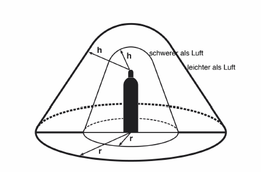
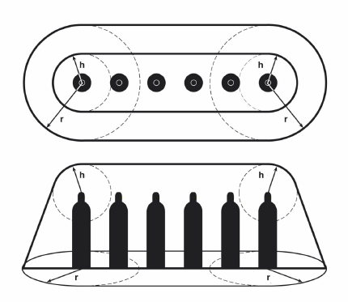
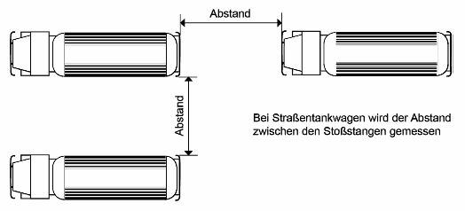
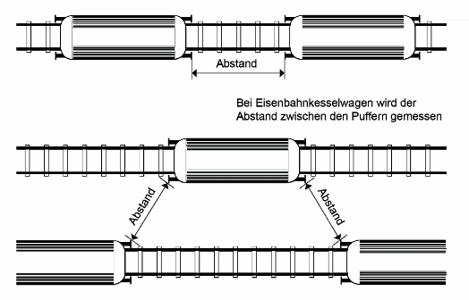

(1) In Abhängigkeit von den ermittelten und bewerteten Gefährdungen sind Maßnahmen zum Schutz vor Gefährdungen bei Tätigkeiten mit Gasen in ortsbeweglichen Druckgasbehältern festzulegen und gemäß GefStoffV § 6 Absatz 8 Nr. 4 als Teil der Dokumentation der Gefährdungsbeurteilung anzugeben.
(2) Die nachstehend beschriebenen Maßnahmen sind beispielhaft und beziehen sich auf Tätigkeiten mit Gasen in ortsbeweglichen Druckgasbehältern.
(1) Für die Festlegung von Gefahrenbereichen aufgrund der möglichen Freisetzung von Gasen siehe TRGS 407 Nummer 3.2.4 Absatz 4.
(2) Der explosionsgefährdete Bereich ist der Gefahrenbereich, der sich aufgrund der entzündbaren Eigenschaften ergibt. Kann die Bildung gefährlicher explosionsfähiger Atmosphäre nicht vermieden werden, so gelten für die Festlegung explosionsgefährdeter Bereiche und die Schutzmaßnahmen zur Vermeidung oder Einschränkung der explosionsgefährdeten Bereiche die GefStoffV Anhang I Nummer 1.6 bis 1.8 sowie TRGS 720, TRGS 721 und TRGS 722. Für die erforderlichen Schutzmaßnahmen zur Vermeidung der Entzündung einer explosionsfähigen Atmosphäre bzw. zur Beschränkung der Auswirkungen gelten TRBS 2152 Teil 3 und 4. Für Maßnahmen gegen elektrostatische Aufladungen wird auf TRGS 727 verwiesen. Für detaillierte Hinweise zur Einteilung explosionsgefährdeter Bereiche in Zonen siehe DGUV Regel 113-001 Anlage 4 (Beispielsammlung) Nummer 1 und Nummer 4.7 (Acetylen).
(3) Innerhalb von explosionsgefährdeten Bereichen dürfen keine Fahrzeuge, Flurförderzeuge oder Fördermittel in nicht explosionsgeschützter Ausführung verkehren. Davon darf abgewichen werden, wenn sichergestellt ist, dass im Bereich der Fahrzeuge keine gefährliche explosionsfähige Atmosphäre vorhanden ist, z. B. durch eine Arbeitsfreigabe.
(4) Gefahrenbereiche gemäß TRGS 407 Nummer 3.2.4 Absatz 4 sind auch in Bereichen mit ortsbeweglichen Druckgasbehältern für akut toxische Gase der Kat. 1, 2 oder 3 festzulegen. Für die Entleerung von ortsbeweglichen Druckgasbehältern mit akut toxischen Gasen Kat. 1 siehe Tabelle 1 sowie Abbildung 1 und 2.
Tabelle 1: Abmessungen der Gefahrenbereiche beim Entleeren von ortsbeweglichen Druckgasbehältern mit akut toxischen Gasen der Kat. 1 (siehe auch Abbildung 3 und 4)
| Bei Entnahme aus | Höhe h in m und Radius r in m | Entleeren | ||||
| im Freien | in Räumen | |||||
| Gase | Gase | |||||
| leichter | schwerer | leichter | schwerer | |||
| als Luft | als Luft | |||||
| der Gasphase | Einzelflasche oder Batterie mit 2 bis 6 Flaschen | h | 1 | 0,5 | 2 | 1 |
| r | 1 | 1 | 2 | 2 | ||
| ortsbewegliche Druckgasbehälter > 150 l oder Batterie mit mehr als 6 Flaschen | h | 2 | 0,5 | 3 | 1 | |
| r | 2 | 2 | 3 | 3 | ||
| der Flüssigphase | h | 2 | 0,5 | 3 | ganzer Raum | |
| r | 2 | 3 | 3 | |||


(1) Zur Vermeidung von unkontrollierter Freisetzung von Gasen müssen die Absperreinrichtungen von gefüllten oder entleerten ortsbeweglichen Druckgasbehältern, die nicht angeschlossen sind, fest verschlossen und mit den vorgesehenen Schutzeinrichtungen versehen sein. Schutzeinrichtungen sind entsprechend den Gefahrgutvorschriften vorzusehen, dazu gehören z. B. Ventilschutzeinrichtungen oder Verschlussmuttern bei bestimmten gesundheitsgefährlichen oder pyrophoren Gasen (siehe dazu auch ADR [1] Abschnitt 4.1.4.1 Verpackungsanweisung P200).
(2) Zur Vermeidung von Beschädigungen der Ausrüstung von ortsbeweglichen Druckgasbehältern infolge Kippen, Umfallen oder Wegrollen muss die Standfläche so beschaffen sein, dass die ortsbeweglichen Druckgasbehälter sicher stehen. Die ortsbeweglichen Druckgasbehälter müssen entsprechend gesichert werden.
4.3.1 Allgemeine Maßnahmen beim Füllen
(1) Ortsbewegliche Druckgasbehälter dürfen nur gefüllt werden, wenn
(2) Zur Vermeidung von Fehlbedienungen dürfen ortsbewegliche Druckgasbehälter in Füllanlagen nur von hierzu beauftragten Beschäftigen nach § 12 BetrSichV gefüllt und gewartet werden, die
(3) Räume, in denen Gase in ortsbewegliche Druckgasbehälter gefüllt werden, dürfen nur von unterwiesenen bzw. fachkundigen Personen betreten werden. In Räumen, in denen andere als inerte Gase (inerte Gase sind z. B. Stickstoff, Edelgase, Kohlendioxid) gefüllt werden, dürfen sich nur die in der Füllanlage Beschäftigten während der Dauer der ihnen übertragenen Arbeiten aufhalten. Nicht unterwiesene bzw. nicht fachkundige Personen dürfen nur in Begleitung von unterwiesenen Personen Zugang haben.
(4) Zur Vermeidung von Stoffunverträglichkeiten dürfen ortsbewegliche Druckgasbehälter nur mit dem Gas gefüllt werden, das auf dem Druckgasbehälter selbst oder in der Füllanweisung angegeben ist.
(5) Die Kontrolle ortsbeweglicher Druckgasbehälter zum Zeitpunkt des Füllens umfasst u. a. die Feststellung des ordnungsgemäßen Zustandes hinsichtlich
Weitere fachliche Hinweise zu den Kontrollen zum Zeitpunkt des Füllens können den entsprechenden Normen entnommen werden [2], [3], [4], [5], [6], [7].
(6) Zur Vermeidung von Materialversagen durch Unterkühlung darf ein ortsbeweglicher Druckgasbehälter nach seiner Befüllung mit Gasen mit einer Temperatur von weniger als - 20 °C nur dann befördert werden, wenn der Behälterwerkstoff entweder für Temperaturen unter - 20 °C geeignet ist, oder wenn die Behälterwand eine Temperatur von mindestens - 20 °C erreicht hat.
(7) Zur Vermeidung von Materialversagen durch Überdruck dürfen Druckgasbehälter nicht überfüllt werden. Überfüllte ortsbewegliche Druckgasbehälter sind unverzüglich gefahrlos bis auf die zulässige Füllmenge zu entleeren. Im Anschluss daran ist die gefüllte Gasmenge erneut zu bestimmen.
(8) An Füllanlagen dürfen ortsbewegliche Druckgasbehälter nicht gelagert, sondern nur zum baldigen Füllen oder Abtransport bereitgestellt werden.
(9) Zur Vermeidung einer gefährlichen Ansammlung von Gasen dürfen sich in Bereichen von mindestens 5 m um betriebsbedingte Freisetzungsstellen von Füllanlagen keine Gruben, Kanäle oder Abflüsse zu Kanälen ohne Flüssigkeitsverschluss sowie keine Kellerzugänge oder sonstige offene Verbindungen zu Kellerräumen oder Öffnungen in Wänden und Decken zu anderen Räumen befinden. Ferner dürfen sich dort auch keine Reinigungs- oder andere Öffnungen von Schornsteinen befinden.
4.3.2 Maßnahmen zur Vermeidung von Drucküberschreitung infolge Überfüllung
(1) Bei ortsbeweglichen Druckgasbehältern, deren Füllstand beim Füllen ständig überwacht werden muss, ist zur Vermeidung von Drucküberschreitung infolge von Überfüllung folgendes zu beachten:
Erfolgen Füll- und Kontrollwägungen auf derselben Waage, müssen diese zusätzlich einer geeigneten Prüfmittelüberwachung unterliegen (z. B. durch Kontrolle in angemessenen Abständen mit geeigneten Gewichten oder durch Selbstüberwachung; aus den Kontrollaufzeichnungen ist zu ermitteln, welche Abstände angemessen sind). Kontrollwägungen müssen unmittelbar nach Beendigung des Füllvorganges durchgeführt werden.
(2) Bei ortsbeweglichen Druckgasbehältern, deren Füllstand beim Füllen nicht ständig überwacht werden muss, ist zur Vermeidung von Drucküberschreitung infolge von Überfüllung Folgendes zu beachten:
Füll- und Kontrollwägungen dürfen auf derselben Waage erfolgen, sofern diese zusätzlich einer geeigneten Prüfmittelüberwachung unterliegen (s. Absatz 1).
(3) Bei Tanks für Gase der Klasse 2 nach ADR [1] ist zur Vermeidung von Drucküberschreitung infolge von Überfüllung Folgendes zu beachten:
| a) | Bei volumetrischer Kontrolle müssen Füll- und Kontrolleinrichtungen voneinander unabhängig sein. |
| b) | Sofern die Kontrolle volumetrisch erfolgt, dürfen Füll- und Kontrollmessungen nicht von derselben Person ausgeführt werden. |
| c) | Kontrollmessungen müssen unmittelbar nach Beendigung des Füllvorganges durchgeführt werden. |
(4) Abweichend von Absatz 1 bis 3 darf bei Druckgasbehältern für tiefgekühlt verflüssigte Gase, die weder entzündbar noch akut toxisch Kat. 1, 2 oder 3 sind, die Befüllung durch Peilrohre überwacht werden.
4.3.3 Maßnahmen zur Vermeidung von Gas- bzw. Stoffunverträglichkeiten
(1) Zur Vermeidung von Korrosion des ortsbeweglichen Druckgasbehälters durch das Gas oder den Restinhalt (z. B. Prüfmittel) darf die Füllung den Behälterwerkstoff oder eine eventuell vorhandene Schutzschicht sowie die Werkstoffe der Ausrüstungsteile, die der Füllung ausgesetzt sind, nicht in gefährlicher Weise angreifen oder mit ihnen gefährliche Verbindungen eingehen.
(2) Zur Vermeidung von Korrosionsschäden muss sichergestellt werden, dass in ortsbeweglichen Druckgasbehältern keine Flüssigkeit in solcher Menge enthalten ist, dass sie gefährliche Korrosion auslösen kann. Es ist daher Folgendes einzuhalten:
(3) Zur Vermeidung eines möglichen Acetylenzerfalls als Folge von Acetylidbildung dürfen nur solche Werkstoffe verwendet werden, die mit Acetylen kein Acetylid bilden. Zum Beispiel darf der Kupfergehalt von metallischen Werkstoffen, die mit Acetylen in Kontakt kommen, 70 % nicht überschreiten. Die Verwendung von Silber ist nicht zulässig, außer in Hartlötverbindungen mit Lötspaltmaßen von max. 0,3 mm.
(4) Zur Vermeidung von Undichtigkeiten dürfen bei Tätigkeiten mit Acetylen nur solche nichtmetallischen Werkstoffe (z. B. für Schlauchleitungen und Dichtungen) verwendet werden, die für Acetylen, Aceton und Dimethylformamid geeignet sind.
4.3.4 Dichtheitskontrollen
(1) Nach dem Füllen von ortsbeweglichen Druckgasbehältern sind die Behälter auf Dichtheit zu kontrollieren, z. B.:
(2) Abweichend von Absatz 1 Nr. 1 und 2 ist bei Tanks im Sinne des Gefahrgutrechts eine Sichtkontrolle auf Dichtheit ausreichend.
4.3.5 Zusätzliche Maßnahmen für das Füllen von Tanks auf Straßen- und Schienenfahrzeugen
(1) Bei einem mit einem Fahrzeug fest verbundenen Tank ergibt sich die höchstzulässige Füllmenge aus der entsprechenden Angabe gemäß den Gefahrgutvorschriften (siehe dazu ADR [1] bzw. RID jeweils Abschnitt 6.8.3.5.6).
(2) Beim Füllen sind zur Vermeidung von Störungen durch die Freisetzung von Gasen folgende Maßnahmen zu ergreifen:
Satz 1 Nr. 4 bis 6 gilt nicht, wenn an der Füllstelle zwischen den Fahrzeugen Schutzwände in mindestens feuerhemmender Ausführung vorhanden sind.


(3) Fahrzeuge mit Tanks sind im Gefahrfall abzuziehen, soweit dies gefahrlos möglich ist.
(4) Bei Straßenfahrzeugen mit ortsbeweglichen Druckgasbehältern sind zur Vermeidung der Eskalation eines Schadensereignisses folgende Maßnahmen zu ergreifen:
(5) Bei Schienenfahrzeugen sind zur Vermeidung der Eskalation eines Schadensereignisses folgende Maßnahmen zu ergreifen:
| a) | durch Hemmschuhe, Radvorleger oder Holzklötze gegen Abrollen zu sichern, |
| b) | durch Verschließen der Zugangsweiche in abweisender Stellung, Verschließen aufgelegter Gleissperren oder durch umlegbare Prellböcke gegen Auffahren anderer Schienenfahrzeuge zu sichern. |
4.3.6 Ergänzende Maßnahmen für das Füllen von Acetylenflaschen und Acetylenflaschenbündeln
(1) Zur Vermeidung oder Begrenzung eines Acetylenzerfalls sind die folgenden Maßnahmen zu ergreifen:
| a) | Zerfallsperre vor der Verteilleitung im Füllstand, |
| b) | Stichflammenschutz der Verteilleitung im Füllstand, |
| c) | Zerfallsperre zwischen der Verteilleitung und der zu füllenden Flasche. |
(2) Die Zerfallsperren müssen dabei folgende Anforderungen erfüllen:
(3) Zur Druckentlastung der Acetylenzuführungsleitungen zwischen Verdichter und Füllrampe müssen Einrichtungen vorhanden sein, die auch außerhalb des Füllraumes von geeigneter Stelle aus betätigt werden können.
(4) Zur Vermeidung eines Acetylenzerfalls aufgrund von Überschreitung der zulässigen Betriebstemperatur sind die folgenden Maßnahmen zu ergreifen:
(5) Zur Vermeidung einer unzulässigen Befüllung von Acetylenflaschen und Acetylenflaschenbündeln sind die folgenden Maßnahmen zu berücksichtigen:
(6) Für Einzelflaschen ist zusätzlich folgendes zu beachten:
(7) Für Flaschenbündel ist zusätzlich folgendes zu beachten:
(8) Um eine unkontrollierte Freisetzung von Acetylen zu vermeiden, sind während und nach der Füllung die Acetylenflaschen und die Flaschenbündel auf Dichtheit zu kontrollieren. Bei dieser Kontrolle müssen die Flaschenventile z. B. durch Absprühen mit Schaum bildenden Mitteln stichprobenweise kontrolliert werden.
4.4.1 Allgemeine Maßnahmen beim Bereithalten und Entleeren
(1) Ortsbewegliche Druckgasbehälter dürfen nicht
bereitgehalten oder entleert werden.
(2) Absatz 1 gilt nicht für
(3) Es dürfen nur die für den Fortgang der Arbeiten notwendigen ortsbeweglichen Druckgasbehälter zum Entleeren angeschlossen sein.
(4) An Stellen, an denen ortsbewegliche Druckgasbehälter zum Entleeren angeschlossen sind, darf höchstens die gleiche Anzahl ortsbeweglicher Druckgasbehälter zusätzlich bereitgehalten werden (für die Begriffsbestimmung für das Bereithalten siehe Nummer 2 Absatz 7).
(5) Zur Vermeidung der Freisetzung von flüssiger Phase müssen ortsbewegliche Druckgasflaschen mit einem Fassungsraum von mehr als 1 l mit verflüssigten Gasen, die entzündbar, oxidierend oder akut toxisch Kat. 1, 2 oder 3 sind, stehend bereitgehalten werden. Dies gilt nicht für ortsbewegliche Druckgasbehälter, die für die waagerechte Entleerung ausgerüstet sind.
(6) In Sicherheitsschränken mit technischer Lüftung dürfen gleichzeitig ortsbewegliche Druckgasbehälter mit verschiedenen Gasen bereitgehalten und entleert werden.
(7) In Bereichen mit erhöhter Brandgefährdung (siehe dazu TRGS 800 Nummer 3.3 Absatz 5) sollen ortsbewegliche Druckgasbehälter möglichst außerhalb der Räume sicher aufgestellt werden. Die Gase sind den Arbeitsplätzen durch dauerhaft technisch dichte, fest verlegte Rohrleitungen zuzuführen. Sind solche Schutzmaßnahmen nicht möglich oder zweckmäßig, sind alternative Schutzmaßnahmen zu ergreifen.
4.4.2 Zusätzliche Maßnahmen bei Aufstellung in Räumen
(1) Räume, in denen ortsbewegliche Druckgasbehälter dauerhaft aufgestellt sind, sind mit dem Warnzeichen W029 "Warnung vor Gasflaschen" gemäß ASR A1.3 zu kennzeichnen.
(2) In Räumen, in denen ortsbewegliche Druckgasbehälter aufgestellt sind, sind Gefährdungen, die durch unkontrolliert freigesetztes Gas entstehen können, durch wirksame Schutzmaßnahmen zu vermeiden. Solche Maßnahmen müssen auf Basis der Gefährdungsbeurteilung festgelegt werden und können z. B. sein:
(3) Bei Aufstellung an Arbeitsplätzen in Räumen ist nicht nur die Anzahl der ortsbeweglichen Druckgasbehälter zu beschränken (siehe dazu Nummer 4.4.1 Absatz 3 und 4) sondern auch der Fassungsraum der einzelnen Druckgasbehälter für entzündbare Gase und/oder akut toxische Gase der Kat. 1. Für Flaschen gilt ein Fassungsraum von je höchstens 150 l (geometrisches Volumen) und für Flaschenbündel oder Flaschenbatterieanlagen eine maximale Anzahl von je sechs Flaschen. Dies gilt nicht für Prozess- und Versuchsanlagen.
(4) Auf Schiffen dürfen ortsbewegliche Druckgasbehälter in Bilgen, Verkaufsräumen und engen Räumen nicht zur Entleerung angeschlossen werden.
(5) Gase, die nach CLP-Verordnung ausschließlich als Gase unter Druck eingestuft sind, dürfen
| a) | natürliche Belüftung, wenn die Lüftungsöffnungen so groß sind, dass sie eine Durchlüftung bewirken und der Fußboden nicht mehr als 1,5 m unter Erdgleiche liegt, |
| b) | technische Lüftung, die bei ständigem Betrieb einen zweifachen Luftwechsel pro Stunde gewährleistet, |
| c) | technische Lüftung, gesteuert über eine geeignete Gaswarneinrichtung, bei deren Ansprechen ein zehnfacher Luftwechsel pro Stunde gewährleistet ist. |
Im Zugangsbereich von Räumen gemäß Satz 1 hat eine deutlich erkennbare und dauerhafte Kennzeichnung zu erfolgen, die auf die Erstickungsgefahr und dass beim Betreten des Raumes die Tür offen gelassen werden muss, hinweist. Weiterführende Informationen für den Anwendungsfall Getränkeschankanlagen mit Versorgung aus Druckgasflaschen finden sich in DGUV Regel 110-007 "Errichtung und Betrieb von Getränkeschankanlagen".
4.4.3 Anforderungen an besondere Aufstellräume und besondere Aufstellplätze im Freien
(1) Besondere Aufstellräume oder Aufstellplätze im Freien sind erforderlich, wenn
(2) Besondere Aufstellräume und Aufstellplätze im Freien dürfen nicht anderweitig genutzt werden.
(3) Besondere Aufstellräume für ortsbewegliche Druckgasbehälter müssen
(4) In besonderen Aufstellräumen und an besonderen Aufstellplätzen im Freien für die Entleerung von Druckgasbehältern
(5) Besondere Aufstellräume für Acetylenflaschen und für den Hochdruckteil von Acetylenflaschenbatterieanlagen dürfen über Absatz 3 hinaus nicht unter anderen Räumen liegen.
(6) Besondere Aufstellräume für Acetylenflaschen müssen über Absatz 3 hinaus Druckentlastungsflächen haben, so dass sie eine Druckwelle gefahrlos abbauen können. Dies kann z. B. durch leicht abhebbare Dächer oder Druckentlastungswände oder tore erreicht werden. Decken zwischen Dach und Aufstellraum sind nicht zulässig.
(7) Besondere Aufstellräume und Aufstellplätze im Freien für ortsbewegliche Druckgasbehälter müssen deutlich erkennbar und dauerhaft gekennzeichnet werden. Diese Forderung gilt als erfüllt, wenn
Soweit ortsbewegliche Druckgasbehälter in einem Bereich aufgestellt sind, für den gleiche oder weitergehende Bestimmungen für die Vermeidung von Gefährdungen bestehen, genügt eine entsprechende Kennzeichnung dieser Bereiche.
4.4.4 Bereithalten in Verkaufsräumen
(1) In Verkaufsräumen dürfen Druckgasbehälter für akut toxische Gase der Kat. 1, 2 oder 3 nicht bereitgehalten werden.
(2) Ansonsten dürfen ortsbewegliche Druckgasbehälter nur unter Beachtung der nachstehenden Maßnahmen zum Verkauf bereitgehalten werden:
(3) Absatz 2 gilt nicht, wenn lediglich druckbeaufschlagte Getränkebehälter bereitgehalten werden.
4.5.1 Allgemeine Maßnahmen
(1) Zur Vermeidung der Fehlbedienung von ortsbeweglichen Druckgasbehältern und insbesondere von Flaschenbatterieanlagen und Flaschenbündeln sind gegebenenfalls besondere schriftliche Hinweise erforderlich, z. B. zum Schließen oder Offenhalten von Absperrarmaturen, zu ihrer Sicherung gegen irrtümliches Betätigen sowie zur sachgerechten Handhabung.
(2) Zur Vermeidung von unkontrollierter Freisetzung von Gasen dürfen ortsbewegliche Druckgasbehälter nur über Entnahmeeinrichtungen entleert werden, die für das jeweilige Gas geeignet sind, einen sicheren und technisch dichten Anschluss an den ortsbeweglichen Druckgasbehälter ermöglichen und keine Mängel aufweisen.
(3) Zur Vermeidung einer Freisetzung von Gasen durch Undichtigkeit infolge einer Beschädigung von Schlauchleitungen sind die Schlauchlängen auf die erforderliche Mindestlänge zu beschränken.
(4) Bei Unterbrechung oder nach Beendigung der Gasentnahme sind ortsbewegliche Druckgasbehälter wieder dicht zu verschließen. Bei entzündbaren Gasen und bei akut toxischen Gasen der Kat. 1, 2 oder 3 ist zusätzlich eine Kontrolle auf Dichtigkeit erforderlich, in der Regel mithilfe eines Lecksuchsprays.
(5) Druckgasbehälter dürfen nur so entleert werden, dass ein Rückströmen von Fremdstoffen in die Druckgasbehälter verhindert wird. Das Eindringen von Fremdstoffen kann z. B. dadurch verhindert werden, dass noch ein Überdruck (Restdruck) im entleerten Druckgasbehälter verbleibt.
(6) Damit gefährliche Drücke oder Materialversagen durch unzulässig hohe oder tiefe Temperaturen nicht entstehen können, dürfen ortsbewegliche Druckgasbehälter, insbesondere solche mit verflüssigten Gasen, nur in kontrollierter Weise angewärmt oder abgekühlt werden. Das Erwärmen darf nur bis zu einer Temperatur von 50 °C erfolgen. Hierbei ist die Temperatur des Wärmeträgers zu überwachen und erforderlichenfalls die Wärmezufuhr zu unterbrechen. Die Erwärmung soll zweckmäßigerweise mit Warmwasser oder angewärmter Luft oder mit Jackenheizungen mit Temperaturregelung und Sicherheitstemperaturbegrenzung von geeigneter Größe und unter Beachtung eventueller Anforderungen an den Explosionsschutz erfolgen. Sie darf nicht mit offenem Feuer erfolgen. Vereisungen an ortsbeweglichen Druckgasbehältern und Ausrüstungsteilen dürfen nicht mit Feuer oder glühenden Gegenständen und im Übrigen nur so beseitigt werden, dass eine gefährliche Erwärmung nicht auftritt. Bei entzündbaren Gasen muss eine Entzündung sicher verhindert werden.
(7) Ortsbewegliche Druckgasbehälter, deren Prüffrist für die wiederkehrende Prüfung gemäß Gefahrgutvorschriften überschritten ist, dürfen nur bereitgehalten und entleert werden, wenn eine äußere Sichtkontrolle keine Auffälligkeiten, wie z. B. Rost, Verformungen o. ä. ergibt. Der ortsbewegliche Druckgasbehälter soll innerhalb eines Zeitraumes, der die doppelte Prüffrist nicht übersteigt, wiederkehrend geprüft werden. Abweichend von Satz 2 sollen ortsbewegliche composite-Behälter innerhalb eines Zeitraumes, der die 1,5-fache der Prüffrist nicht übersteigt, wiederkehrend geprüft werden. Auf keinen Fall darf jedoch die begrenzte Lebensdauer (limited life) überschritten werden, falls diese festgelegt und gekennzeichnet worden ist. Wiederkehrende Prüfungen gemäß BetrSichV bleiben unberührt.
4.5.2 Zusätzliche Maßnahmen für bestimmte Gase
(1) Zur Vermeidung von Schäden durch Überdruck in der nachgeschalteten Anlage müssen ortsbewegliche Druckgasbehälter mit verflüssigten Gasen senkrecht aufgestellt werden. Dies gilt nicht für ortsbewegliche Druckgasbehälter, die für die waagerechte Entleerung ausgerüstet sind.
(2) Bei Tätigkeiten mit oxidierenden Gasen sind zur Vermeidung einer gefährlichen Reaktion oder einer Brand- und Explosionsgefährdung die nachfolgenden Maßnahmen zu beachten:
(3) Bei Tätigkeiten mit akut toxischen Gasen der Kat. 1 oder 2 (H330) müssen für die Flucht in einer Gefahrensituation Atemschutzgeräte dauernd mitgeführt oder so bereit gehalten werden, dass sie für die Beschäftigten schnell erreichbar sind. Hiervon darf im Einzelfall im Ergebnis der Gefährdungsbeurteilung abgewichen werden.
(4) Wenn bei Tätigkeiten mit ätzenden oder tiefgekühlt verflüssigten Gasen diese freigesetzt werden können, ist geeignete PSA zu tragen, z. B. Schutzhandschuhe und Schutzbrille. Konkrete Hinweise dazu sind im Sicherheitsdatenblatt oder z. B. bei GisChem [9] zu finden.
(5) Zur Verhinderung des Austritts von Aceton mit dem Gasstrom dürfen Acetylenflaschen mit nicht-monolithischen porösen Materialien (Schüttmassen) nicht liegend entleert werden.
(6) Verflüssigtes Acetylen lässt sich sehr leicht zum explosionsartigen Zerfall bringen. Daher ist die Verflüssigung von Acetylen, die bei vergleichsweise hohen Drücken bzw. niedrigen Temperaturen erfolgen kann, zu vermeiden. Dazu ist der maximale Betriebsdruck unter Berücksichtigung der zu erwartenden Betriebstemperatur festzulegen, siehe TRGS 407 Anlage 4 Nummer A.4.2.
(7) Zur Vermeidung der Entzündung von Acetylen in Folge von Undichtigkeiten dürfen Temperaturen von Oberflächen, die als Zündquellen in Betracht kommen, 225 °C nicht übersteigen.
4.5.3 Entleeren von verflüssigten Gasen mit Druckerzeugung
(1) Zur Vermeidung von Unverträglichkeiten der eingesetzten Gase dürfen zum Entleeren von ortsbeweglichen Druckgasbehältern andere Gase zur Druckerzeugung nur verwendet werden, wenn diese mit dem zu fördernden Gas nicht gefährlich reagieren. Zum Entleeren von ortsbeweglichen Druckgasbehältern mit verflüssigten entzündbaren Gasen dürfen nur inerte oder entzündbare Gase, nicht aber Druckluft oder oxidierende Gase wie z. B. Sauerstoff verwendet werden.
(2) Zur Vermeidung von Materialversagen durch Überfüllung von ortsbeweglichen Druckgasbehältern dürfen 2/3 des nach ADR [1] Abschnitt 4.1.4.1 Verpackungsanweisung P200 für das jeweilige Gas erforderlichen Prüfüberdrucks nicht überschritten werden.
(3) Zur Vermeidung von Gasunverträglichkeiten dürfen zur Druckbeförderung von verflüssigten Gasen keine Gase verwendet werden, die mit dem zu fördernden Gas reagieren oder die dessen Eigenschaften in gefährlicher Weise verändern können.
4.5.4 Entleeren in Bereichen, die der Öffentlichkeit zugänglich sind
(1) Ortsbewegliche Druckgasbehälter für akut toxische Gase der Kat. 1, 2 oder 3 (Vergiftungsgefahr) dürfen in Bereichen, die der Öffentlichkeit zugänglich sind, zum Entleeren nur aufgestellt werden, wenn sie ständig beaufsichtigt werden. Die Aufsicht muss fachkundig oder besonders unterwiesen sein.
(2) Ortsbewegliche Druckgasbehälter für entzündbare oder oxidierende Gase müssen in Bereichen, die der Öffentlichkeit zugänglich sind, entweder ständig beaufsichtigt oder durch Absperrung, Einfriedung oder Unterbringung in einem Flaschenschrank dem Zugriff Unbefugter entzogen sein. Bei nur vorübergehender Aufstellung genügt ein Hinweisschild.
(3) In Räumen, die der Öffentlichkeit zugänglich sind, dürfen ortsbewegliche Druckgasbehälter mit entzündbaren oder oxidierenden Gasen nur entleert werden, wenn sie
(1) Zur Vermeidung der Überfüllung einzelner Druckgasbehälter durch Druckausgleich dürfen in Batterieanlagen nur ortsbewegliche Druckgasbehälter mit dem gleichem Prüfüberdruck zusammengeschaltet werden. Für Batterieanlagen für Acetylen siehe Absatz 7.
(2) Die Zusammenschaltung von ortsbeweglichen Druckgasbehältern für entzündbare Gase in Batterieanlagen muss so erfolgen, dass die Luft aus den Anlagenteilen, die die entzündbaren Gase führen, ausgespült werden kann.
(3) Der Hochdruckteil und Sicherheitseinrichtungen von Batterieanlagen sind in besonderer Weise zu schützen (z. B. vor unzulässiger Wärmeeinwirkung und Witterungseinflüssen). Rohrleitungen dürfen nicht Teil eines anderen Zwecken dienenden Erdungssystems sein.
(4) Zur Vermeidung von gefährlichen Zuständen wie z. B. unzulässig hohem Druck und dadurch mögliche Undichtigkeiten oder Bersten von Behältern durch unterschiedliche Füllmengen (Füllstände) in den Einzelflaschen von Flaschenbündeln oder Flaschenbatterieanlagen sind die besonderen Hinweise zum Füllen und Entleeren des Flaschenbündels bzw. der Flaschenbatterieanlage zu beachten, z. B. über das Schließen oder Offenhalten von Absperrarmaturen, über deren Sicherung gegen irrtümliches Betätigen sowie über das sachgerechte Handhaben des Flaschenbündels bzw. der Flaschenbatterieanlage. Diese Hinweise sind schriftlich zu fixieren und auf einem Hinweisschild dauerhaft am Flaschenbündel bzw. an der Flaschenbatterieanlage anzubringen.
(5) Um eine Freisetzung von Gasen zu vermeiden, müssen das Hauptabsperrventil und die Flaschenventile geschlossen werden, bevor leere Flaschen oder Bündel von der Batterieanlage entfernt werden.
(6) Beim Zusammenschalten mehrerer ortsbeweglicher Druckgasbehälter für verflüssigte Gase, bei denen die Entnahme aus der flüssigen Phase erfolgt, dürfen die Absperreinrichtungen der einzelnen ortsbeweglichen Druckgasbehälter, von Störungen abgesehen, nach ihrem Öffnen erst wieder geschlossen werden, wenn bei allen ortsbeweglichen Druckgasbehältern ein Druck- und Temperaturausgleich stattgefunden hat oder diese entleert sind, damit ein ungewolltes Überfüllen einzelner ortsbeweglicher Druckgasbehälter verhindert wird.
(7) In Batterieanlagen für Acetylen dürfen zur Vermeidung von unkontrollierten Umfüllungen zwischen den Acetylenflaschen nur Acetylenflaschen
zur gemeinsamen Entleerung zusammengeschlossen werden. Für die unterschiedlichen Seiten von zweiseitigen Batterieanlagen, die DIN EN ISO 14114 [10] entsprechen und in denen die Seiten durch eine Einrichtung getrennt sind, welche den simultanen Betrieb der unterschiedlichen Seiten ausschließt (z. B. Dreiwegehahn (3/2-Wege) oder Umschalteinrichtung, ausgenommen Kugelhahn (2/2-Wege)), dürfen Acetylenflaschen oder Acetylenflaschenbündel verwendet werden, die nicht Satz 1 entsprechen.
(8) Zur Vermeidung von unkontrollierten Umfüllungen zwischen den Acetylenflaschen oder übermäßiger Belastung von einzelnen Acetylenflaschen in Acetylenflaschenbündeln und Batterieanlagen durch Druckausgleich müssen die Ventile aller angeschlossenen Acetylenflaschen geöffnet sein.
(9) Zur Vermeidung einer Zerfallsreaktion durch Zündung infolge adiabatischer Verdichtung in der Sammelleitung muss diese mit Acetylen gespült werden, bevor die Rohrleitung unter Betriebsdruck gesetzt wird. Dabei müssen die Ventile möglichst langsam geöffnet werden.
(10) Wenn in der Gefährdungsbeurteilung nichts anderes festgelegt ist, dann ist zu ortsbeweglichen Acetylenflaschenbatterieanlagen mit nicht mehr als sechs Acetylenflaschen ein Schutzabstand von 3 m und zu größeren ortsbeweglichen Acetylenflaschenbatterieanlagen ein Schutzabstand von 5 m erforderlich.
(1) Ortsbewegliche Druckgasbehälter dürfen
(2) Eine Ventilschutzeinrichtung ist nicht erforderlich bei der innerbetrieblichen Beförderung von ortsbeweglichen Druckgasbehältern mit angeschlossenen Entnahmeeinrichtungen, wenn die Absperrventile geschlossen sind. Davon unberührt ist die bestimmungsgemäße Gasversorgung von Verbrauchsgeräten während der Fahrt.
(3) Bei der innerbetrieblichen Beförderung von Acetylenflaschenbündeln müssen die Einzelflaschenventile während der Beförderung offen sein. Bündel dürfen nur mit dem Hauptabsperrventil geschlossen werden.
(4) Bei der Beförderung auf Fahrzeugen, auf Flurförderzeugen und bei der Beförderung mit Hebezeugen müssen ortsbewegliche Druckgasbehälter so gesichert werden, dass sie sich nicht bewegen können. Bei der Beförderung in geschlossenen Fahrzeugen, einschließlich solcher mit Fahrzeugplane, muss sowohl oben als auch unten eine ausreichende Lüftung erfolgen, z. B. durch Lüftungsschlitze, so dass keine gefährliche explosionsfähige Atmosphäre entstehen kann.
(1) Ortsbewegliche Druckgasbehälter, ihre Ausrüstungsteile sowie die Ausrüstungsteile und Rohrleitungen von Batterieanlagen sind regelmäßig instand zu halten (§ 10 BetrSichV). Dies umfasst insbesondere
Hinweise und Empfehlungen zur Instandhaltung von Gasversorgungsanlagen mit ortsbeweglichen Druckgasbehältern gibt z. B. das DVS-Merkblatt 0221 [11].
(2) Werden an einem ortsbeweglichen Druckgasbehälter Undichtigkeiten festgestellt, die nicht sofort beseitigt werden können, oder weist der gefüllte ortsbewegliche Druckgasbehälter sonstige Mängel auf, durch die Beschäftigte oder andere Personen gefährdet werden können, so ist der ortsbewegliche Druckgasbehälter unverzüglich und gefahrlos entsprechend der Betriebsanweisung oder einer Verfahrensanweisung zu entleeren oder es sind andere geeignete Schutzmaßnahmen zu treffen, die eine Gefährdung verhindern (z. B. Bergedruckgefäß). Es sind Maßnahmen gegen die Wiederinbetriebnahme zu treffen.
(3) Bei Mängeln an Ausrüstungsteilen von ortsbeweglichen Druckgasbehältern, z. B. Absperreinrichtungen, die sich nicht mehr von Hand öffnen lassen, sind die ortsbeweglichen Druckgasbehälter einer ordnungsgemäßen Instandsetzung zu unterziehen.
(4) Zur Vermeidung von unsachgemäßer Instandsetzung dürfen Instandsetzungsarbeiten an ortsbeweglichen Druckgasbehältern nur von beauftragten Beschäftigten in hierfür eingerichteten Werkstätten durchgeführt werden. Hierbei sind vorher festzulegen:
(5) Zur Vermeidung von unkontrollierter Gasfreisetzung und Gefährdung durch wegfliegende Teile darf das Ventil von ortsbeweglichen Druckgasbehältern erst dann abgeschraubt werden, wenn festgestellt worden ist, dass der ortsbewegliche Druckgasbehälter vollständig drucklos ist. Kann der ortsbewegliche Druckgasbehälter z. B. wegen einer Verstopfung im Ventil oder wegen eines Defektes am Ventil nicht drucklos gemacht werden, so muss von dazu beauftragten Beschäftigten entsprechend einer besonderen Verfahrensanweisung vorgegangen werden. Hinweise dazu gibt z. B. die DIN EN ISO 25760 [12].
(1) Soweit Feuerlöscher nicht schon aufgrund der Grundausstattung gemäß ASR A2.2 "Maßnahmen gegen Brände" vorhanden sind, müssen geeignete Feuerlöscher für die Bekämpfung von Entstehungs- und Umgebungsbränden leicht erreichbar bereitgehalten werden.
(2) Wenn entzündbare Gase freigesetzt werden und brennen, ist das Ziel die Unterbrechung der Gaszufuhr und die Kühlung der Umgebung. Wenn ausströmendes Gas brennt und die Gaszufuhr nicht unterbrochen werden kann, dann soll in der Regel das brennende Gas nicht gelöscht werden, um die Bildung explosionsfähiger Atmosphäre als Folge der Freisetzung des unverbrannten Gases zu vermeiden.
(3) Im Brandfall sollen gefüllte ortsbewegliche Druckgasbehälter aus dem brandgefährdeten Bereich entfernt werden. Ist dies nicht möglich, so sollen die Druckgasbehälter vor zu starker Erhitzung bewahrt werden, z. B. durch Besprühen mit Wasser o. a. geeigneten Mitteln aus geschützter Stellung, wenn dies ohne Gefährdung von Beschäftigten und anderen Personen möglich ist.
(4) Im Brandfall ist die Feuerwehr auf das Vorhandensein von Druckgasbehältern aufmerksam zu machen.
(5) Druckgasbehälter, die örtlich erhitzt oder der Brandhitze ausgesetzt waren, müssen deutlich entsprechend gekennzeichnet und vor einer eventuellen Weiterverwendung fachkundig geprüft werden, z. B. in Füllwerken.
(6) Bei Acetylenflaschen sind im Brandfall besondere Maßnahmen gegen einen möglichen Zerfall des Gases in der Flasche zu treffen. Ist dies nicht möglich, sind Maßnahmen zur Begrenzung der Auswirkungen eines Acetylenzerfalls in der Flasche zu treffen. Hinweise dazu gibt es im "Merkblatt zur Verhütung von Acetylenflaschen-Explosionen" in Verbindung mit der "Kurzinformation zur Verhütung von Acetylenflaschen-Explosionen" [13]. Diese Maßnahmen sind in einer Betriebsanweisung darzustellen.
(7) Nach Flammenrückschlägen oder bei anderen Störungen dürfen Druckgasbehälter nur weiter betrieben werden, wenn die Störung beseitigt und der ordnungsgemäße Zustand festgestellt worden ist.